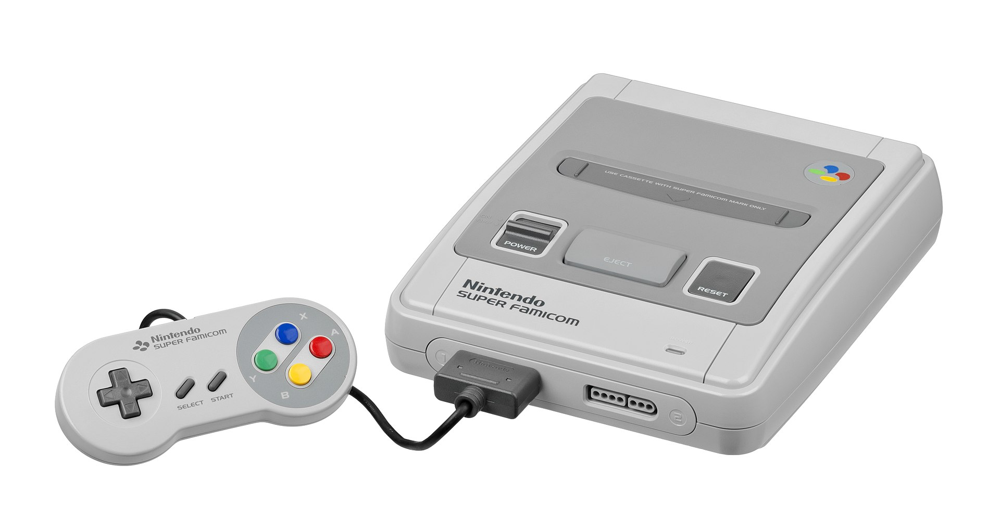
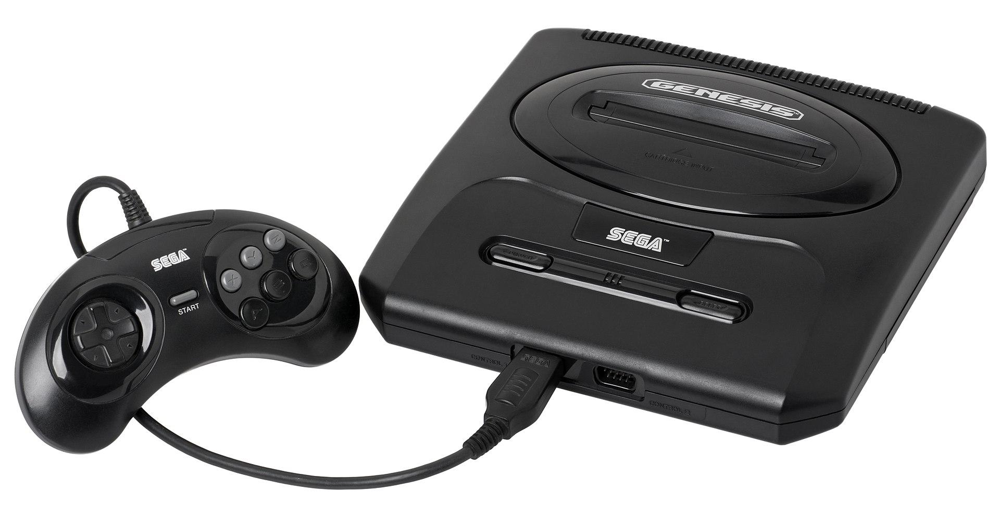
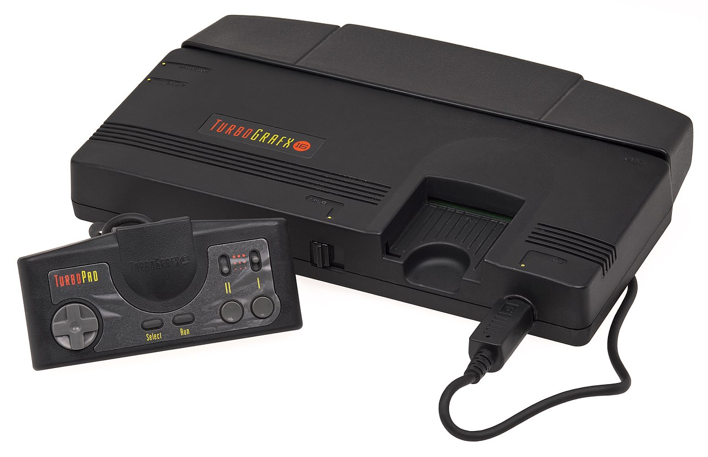

The Super NES
The Super Nintendo Entertainment System (SNES), commonly shortened to Super NES or Super Nintendo, is a 16-bit home video game console developed by Nintendo that was released in 1990 in Japan and South Korea, 1991 in North America, 1992 in Europe and Oceania, and 1993 in South America. In Japan, the system is called the Super Famicom (SFC). In South Korea, it is known as the Super Comboy and was distributed by Hyundai Electronics. The system was released in Brazil on August 30, 1993, by Playtronic. Although each version is essentially the same, several forms of regional lockout prevent the different cartridges from being compatible with one another.
The SNES is Nintendo's second programmable home console, following the Nintendo Entertainment System (NES). The console introduced advanced graphics and sound capabilities compared with other systems at the time. The system was designed to accommodate the ongoing development of a variety of enhancement chips integrated into game cartridges to be competitive into the next generation.
The SNES received largely positive reviews and was a global success, becoming the best-selling console of the 16-bit era after launching relatively late and facing intense competition from Sega's Genesis console in North America and Europe. Overlapping the NES's 61.9 million unit sales, the SNES remained popular well into the 32-bit era, with 49.1 million units sold worldwide by the time it was discontinued in 2003. It continues to be popular among collectors and retro gamers, with new homebrew games and Nintendo's emulated rereleases, such as on the Virtual Console, the Super NES Classic Edition, and Nintendo Switch Online.
Sega Mega Drive
The Sega Genesis, known as the Mega Drive outside North America, is a 16-bit fourth-generation home video game console developed and sold by Sega. The Genesis was Sega's third console and the successor to the Master System. Sega released it in 1988 in Japan as the Mega Drive, and in 1989 in North America as the Genesis. In 1990, it was distributed as the Mega Drive by Virgin Mastertronic in Europe, Ozisoft in Australasia, and Tec Toy in Brazil. In South Korea, it was distributed by Samsung as the Super Gam*Boy and later the Super Aladdin Boy.
Designed by an R&D team supervised by Hideki Sato and Masami Ishikawa, the Genesis was adapted from Sega's System 16 arcade board, centered on a Motorola 68000 processor as the CPU, a Zilog Z80 as a sound controller, and a video system supporting hardware sprites, tiles, and scrolling. It plays a library of more than 900 games on ROM-based cartridges. Several add-ons were released, including a Power Base Converter to play Master System games. It was released in several different versions, some created by third parties. Sega created two network services to support the Genesis: Sega Meganet and Sega Channel.
In Japan, the Mega Drive fared poorly against its two main competitors, Nintendo's Super Famicom and NEC's PC Engine, but it achieved considerable success in North America, Brazil, and Europe. Contributing to its success was its library of arcade game ports, the popularity of Sega's Sonic the Hedgehog series, several popular sports franchises, and aggressive youth marketing that positioned it as the cool console for adolescents. The North American release in 1991 of the Super Famicom, rebranded as the Super Nintendo Entertainment System, triggered a fierce battle for market share in the United States and Europe known as the "console war". As this contest drew increasing attention to the video game industry among the general public, the Genesis and several of its highest-profile games attracted significant legal scrutiny on matters involving reverse engineering and video game violence. Controversy surrounding violent games such as Night Trap and Mortal Kombat led Sega to create the Videogame Rating Council, a predecessor to the Entertainment Software Rating Board.
30.75 million first-party Genesis units were sold worldwide. In addition, Tec Toy sold an estimated three million licensed variants in Brazil, Majesco projected it would sell 1.5 million licensed variants of the system in the United States, and much smaller numbers were sold by Samsung in South Korea. By the mid-2010s, licensed third-party Genesis rereleases were still being sold by AtGames in North America and Europe. Many games have been re-released in compilations or on online services such as the Nintendo Virtual Console, Xbox Live Arcade, PlayStation Network, and Steam. The Genesis was succeeded in 1994 by the Sega Saturn.
TurboGrafx-16
The TurboGrafx-16, known as the PC Engine[a] outside North America, is a fourth-generation home video game console designed by Hudson Soft and sold by NEC Home Electronics. It was the first console marketed in the 16-bit era, although it used a modified 8-bit CPU. It was released in Japan in 1987 and in North America in 1989. The Japanese model was officially imported and distributed in France in 1989, unofficial imports had made their way to the UK by the same year, in 1990 Spain received a PAL version based on the American model known as simply TurboGrafx. In Japan, the system was launched as a competitor to the Famicom, but the delayed United States release meant that it ended up competing with the Sega Genesis and later the Super NES.
The TurboGrafx-16 has an 8-bit CPU, a 16-bit video color encoder, and a 16-bit video display controller. The GPUs are capable of displaying 482 colors simultaneously, out of 512. With dimensions of just 14 cm × 14 cm × 3.8 cm (5.5 in × 5.5 in × 1.5 in), the Japanese PC Engine is the smallest major home game console ever made.[2][3] Games were released on HuCard cartridges and later the CD-ROM optical format with the TurboGrafx-CD add-on.
The TurboGrafx-16 failed to break into the North American market and sold poorly, which has been blamed on the delayed release and inferior marketing.[4] Despite the "16" in its name and the marketing of the console as a 16-bit platform, it used an 8-bit CPU, a marketing tactic that was criticized by some as deceptive.[5]
However, in Japan, the PC Engine, introduced into the market at a much earlier date, was very successful. It gained strong third-party support and outsold the Famicom at its 1987 debut, eventually becoming the Super Famicom's main rival.[6] At least 17 distinct models of the TurboGrafx-16 were made, including portable versions and those that integrated the CD-ROM add-on.[7]
An enhanced model, the PC Engine SuperGrafx, was rushed to market in 1989. It featured many performance enhancements and was intended to supersede the standard PC Engine. It failed to catch on - only six titles were released that took advantage of the added power and it was quickly discontinued. The entire series was discontinued in 1994. It was succeeded by the PC-FX, which was released only in Japan.